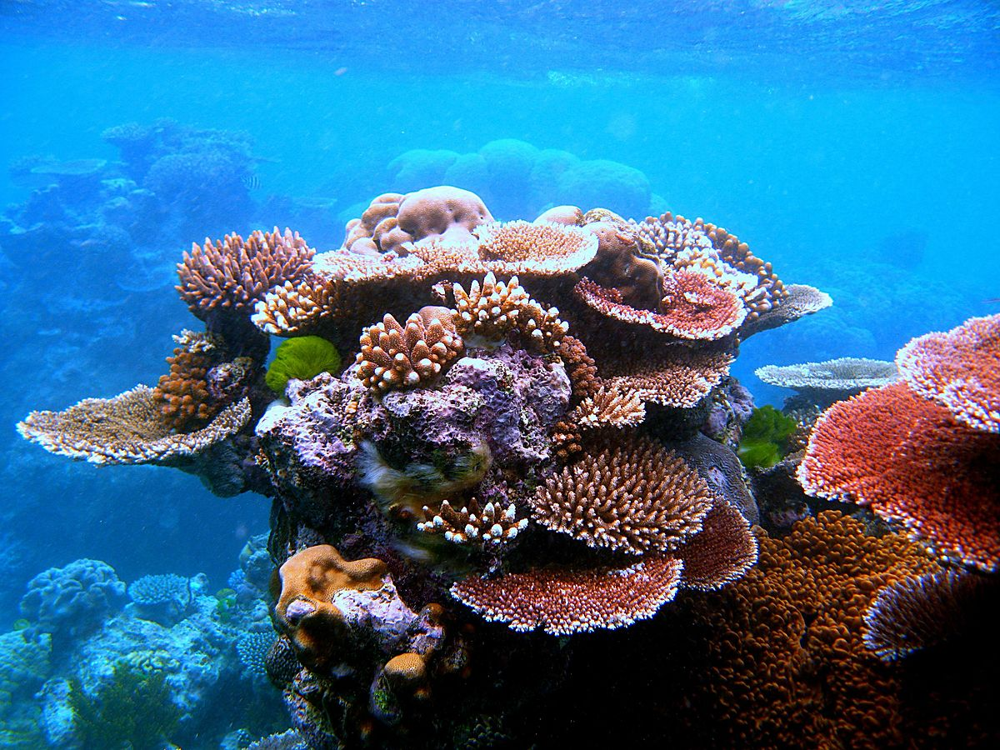

MARINE LIFE !!
Marine life, or sea life or ocean life, is the plants, animals and other organisms that live in the salt water of the sea or ocean, or the brackish water of coastal estuaries. At a fundamental level, marine life affects the nature of the planet. Marine organisms, mostly microorganisms, produce oxygen and sequester carbon. Shorelines are in part shaped and protected by marine life, and some marine organisms even help create new land. The term marine comes from the Latin mare, meaning sea or ocean.
Most life forms evolved initially in marine habitats. By volume, oceans provide about 90 percent of the living space on the planet.The earliest vertebrates appeared in the form of fish, brwhich live exclusively in water. Some of these evolved into amphibians which spend portions of their lives in water and portions on land. Other fish evolved into land mammals and subsequently returned to the ocean as seals, dolphins or whales. Plant forms such as kelp and algae grow in the water and are the basis for some underwater ecosystems. Plankton forms the general foundation of the ocean food chain, particularly the phytoplankton which are key primary producers.
Marine invertebrates exhibit a wide range of modifications to survive in poorly oxygenated waters, including breathing tubes as in mollusc siphons. Fish have gills instead of lungs, although some species of fish, such as the lungfish, have both. Marine mammals, such as dolphins, whales, otters, and seals need to surface periodically to breathe air.
There are over 200,000 documented marine species with perhaps two million marine species yet to be documented. Marine species range in size from the microscopic, including phytoplankton which can be as small as 0.02 micrometres, to huge cetaceans (whales, dolphins and porpoises), including the blue whale – the largest known animal reaching 33 metres (108 ft) in length. Marine microorganisms, including protists, bacteria and viruses, have been variously estimated as constituting about 70% or about 90% of the total marine biomass.
There is no life without water. It has been described as the universal solvent for its ability to dissolve many substances,and as the solvent of life.Water is the only common substance to exist as a solid, liquid, and gas under conditions normal to life on Earth.The Nobel Prize winner Albert Szent-Györgyi referred to water as the mater und matrix: the mother and womb of life.
CORELS UNDER SEA!!!
